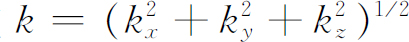

乍看起来，你可能以为低能电子很难穿过固态晶体。晶体中的原子挤在一起，中心相距只有几个Å（1Å＝10－10 m），而且原子对电子散射的有效直径大致也是1Å左右。这就是说，比起它们之间的间距来，原子是很大的。因此你可以估计出两次碰撞之间的平均自由程是几个Å的数量级——实际上这是微不足道的，你可能会料到电子几乎动一动就撞在这个或那个原子上。然而，自然界中普遍存在着的现象却是：假如晶格是完美的，电子能轻而易举顺畅地通过晶体——几乎和在真空中的情形一样。正是这个奇妙的事实使得金属导电如此容易，也使得许多实用器件的开发成为可能。例如，它使晶体管模拟无线电电子管成为可能。在无线电电子管中电子自由地穿过真空，而在晶体管中电子自由地穿过晶格。晶体管行为的内部机理将在这一章中叙述；而这些原理在各种实用器件中的应用则放到下一章去讲解。
电子在晶体中的传导只是一种非常普遍的现象的一个例子。不仅电子可以穿过晶体，其他的“东西”像原子的激发也能够以同样的方式运动。所以我们要讨论的现象以多种形式出现在固态物理学的研究中。
你们还记得我们曾经讨论过双态系统的许多例子。现在让我们想象一个电子可以处在两个位置中的任一位置上，在每个位置上它都是处在相同的环境中。我们还假定电子具有一定的振幅从一个位置跑到另一个位置，当然，它也具有同样的振幅跑回来，就像我们在§10-1中对氢分子离子的讨论那样。量子力学定律给出下面的结果，对电子来说有两个可能的具有确定能量的状态。每一个状态可以用电子在这两个基础位置的振幅来描写。对于每一个能量确定的状态，振幅的大小都不随时间变化，而两者的相位以同一频率随时间变化。另一方面，如果开始时电子在一个位置，以后它会跑到另一个位置，再过一会它又会回到第一个位置。其振幅和两个耦合摆的运动相似。
现在来考虑完美晶体，我们想象其中一个电子处于某一特定原子的某种“陷阱”中，并具有某个特定的能量。还假定电子具有一定振幅运动到邻近另一个原子陷阱中。这有点像双态系统——但是更复杂些。当电子到达邻近的原子后，还可以继续运动到下一个新的位置，也可以回到原来的位置。现在的情形并不是类似两个 耦合的摆，而是类似于无限个耦合在一起的单摆。这有点像你们在第一学年物理课上看到过的那种用来演示波的传播的机械——在扭转金属线上装有一长串杆棒。
假如你有一个谐振子，它被耦合到另一个谐振子上，而后者再耦合到下一个谐振子上，等等……，假如你在某一个位置上扰动一下，这个扰动会像波一样沿线传播。假如你把一个电子放在一长串原子中的一个原子上也会出现同样的情况。
通常，分析这种力学问题最简单的方法不是去考虑在某个地点发出一个脉冲后会发生什么，而是去考虑稳态波的解。存在着某种位移的图样，它作为单一的不变频率的波在晶体中传播。基于同一理由，对电子也发生同样的情况——因为在量子力学中两者用相似的方程式描述。
然而，你必须懂一件事：电子在一个地点的振幅 是振幅而不是概率。如果电子像水流过小孔那样只是简单地从一处渗漏到另一处，它的行为就会完全不同。譬如说，假如有两个水槽，我们用管子将其连通，使水能够从一个水槽流到另一个水槽中去，那么两个水槽中的水平面将会按指数规律相互趋近。但是对于电子，所发生的是振幅的流动而不是单纯的概率流动。这是虚数项——量子力学微分方程中的i——的特点，它使指数解变成振荡解。于是所发生的过程就完全不同于两个连通的水槽之间的渗漏。
现在我们来定量地分析这量子力学情况。设想由一长串原子组成的一维体系如图13-1（a）所示。（当然，晶体是三维的，但它们的物理原理完全相同，你一旦理解了一维的情形，就能理解三维中所发生的过程。）下一步，我们来看一下如果把一个电子放到这一串原子上将会发生什么情况。当然，在真实的晶体中原来就已经有亿万个电子了。但是它们中的大多数（对于绝缘的晶体则几乎是所有的）都以某种方式围绕着它自己的原子运动——一切都十分稳定。然而，我们现在要考虑的是放进一个额外 的电子后会发生些什么。我们不考虑其他的电子正在做什么，因为我们假定改变它们的运动状态需要很高的激发能量。加上一个电子就好像制造出一个受到微弱束缚的负离子。在观察这一个额外 的电子行为的时候，我们事实上取一个近似，即忽略原子内部的结构。
图13-1 一维晶体中电子的基础态
当然电子可以运动到另一个原子上，从而使负离子转移到另一个地点。就像电子可以在两个质子之间跳跃一样 。我们假设电子具有从一个原子跳跃到在它任何一边的相邻原子上的一定的振幅。
我们现在怎样描写这样的体系呢？合理的基础态是什么？假如你还记得当我们只有两个可能的位置时我们曾经是怎样做的，你就能猜出我们将会怎么办。假设这一原子串中各个的间距都相等，我们把原子依次编号如图13-1（a）所示。一个基础态是电子在第6号原子上，另一基础态是电子在第7号原子上或在第8号原子上，依此类推。我们可以说电子位于第n 个原子处就表示第n 基础态。让我们称它为基础态｜n〉。图13-1表示
这3个基础态指的是什么。我们可以用这些基础态来描述我们的一维晶体中电子的任何状态｜Φ 〉，只要给出｜Φ 〉在每一基础态的振幅〈n｜Φ 〉——即电子位于某一特定原子的振幅。于是我们可以将状态｜Φ 〉写成所有基础态的叠加：
下面我们假设电子位于某一原子时具有一定的振幅渗漏到任何一边的原子中。我们将取最简单的情况，电子只能渗漏到紧邻的原子中——要到达次邻近的原子，它必须走两步。我们令电子从一个原子跳跃到下一个原子的振幅为iA
/ （每单位时间）。
（每单位时间）。
我们目前把电子位于第n 个原子的振幅〈n｜Φ 〉写成C n 。于是式（13.1）就要写成：

假如我们已经在给定时刻的各个振幅C n 取它们的绝对值的平方，就能得到在该时刻观察第n 个原子时发现电子的概率。
在以后的某个时刻情况将会怎样呢？与我们已经研究过的双态系统相类似，我们认为这种系统的哈密顿方程组应当由下面这样的方程式组成：
右边的第一个系数E 0 的物理意义是电子如果不能离开一个原子所具有的能量。（我们把什么叫作E 0 是无所谓的，正像我们已经见到过多次，它只不过表示我们对零点能的选择。）第二项表示电子在单位时间从第（n ＋1）个陷阱漏到第n 个陷阱的振幅，最后一项是从（n －1）个陷阱漏入的振幅。像往常那样，我们假设A 是常数（不依赖于t ）。
为了完全描写任意状态｜Φ 〉的行为，对每一个振幅C n 都要有像式（13.3）那样的一个方程。因为我们要考虑具有大量原子的晶体，我们假设有无限多数目的状态——原子在两个方向上都延伸到无限。（对于有限的情况，我们必须特别注意在端点所发生的过程。）如果基础态的数目N 是无限大，那么全部哈密顿方程的数目也是无限大！我们只写下典型的例子：
我们可以研究许多有关晶格中电子的问题，但我们首先来试试求解有确定的能量的状态。正像我们在早先几章中所看到的，这意味着我们必须找到一种情况，如果振幅要随时间改变的话全都要以同样的频率改变。我们预料解的形式为：
复数a n 是发现电子在第n 个原子的振幅不随时间改变的部分。假如我们把这个试解代入方程式（13.4）中去试一下，所得结果为
对于无限个未知数a n 我们有无限个这样的方程式——吓坏人的。
所有我们必须做的是取行列式……可是且慢！当有2，3或4个方程的时候采用行列式是个好方法。但如果有大量——或无限多——的方程式，行列式就不很方便了。我们最好试试看直接解这些方程式。首先让我们按照其位置 来标记这些原子，我们说原子n 在x n 处，原子n ＋1在x n ＋1 处。假如原子的间距等于b ——如图13-1中那样——我们就有x n ＋1 ＝x n ＋b 。把原点选在第零号原子上，我们有x n ＝nb 。我们可以把式（13.5）重新写成：
方程式（13.6）就变成
或者，利用x n ＋1 ＝x n ＋b 这个事实，我们也可写下
这个方程与微分方程有点类似。它告诉我们一个量a （x ）在某一点（x n ）的数值和某些相邻点（x n ±b ）处的同一物理量的关系。（微分方程把一个函数在某一点上的数值和无限靠近的点上的数值联系了起来。）或许我们经常用来解微分方程的方法在这里也有效，让我们来试试看。
常系数线性微分方程总能以指数函数作为解。这里我们可以试试同样的解法，我们取试解
于是方程式（13.9）变成
我们现在可以消去公因子 ，得到
最后两项正好等于（2A coskb ），所以
我们发现任意 选择一个常数k 都可以得到一个解，其能量由上式决定。有许多依赖于k 的可能的能量，并且每一个k 对应于一个不同的解。一共有无穷数目的解——这不足为奇，因为我们开始时就有无穷数目的基础态。
我们来看一看这些解意味着什么。对于每一个k ，a 由式（13.10）给出。于是振幅C n 为
这里你们应当记住按照式（13.13）能量E 也依赖于k 。振幅与空间有关的部分 是 。当我们从一个原子走到下一个原子时振幅随之振荡。
我们说在空间中，振幅就像复数 振荡——在每一个原子处，振幅的大小 都相同，但是在某一给定的时刻的相位则是一个原子比下一个原子超前一个量（ikb ）。像我们在图13-2中所画的那样，用竖线来表示每一个原子处振幅的实部，这样我们就可以形象地描绘发生的过程。显然，这些竖线的包络线（如虚线所示）是余弦曲线。C n 的虚部也是振荡函数，但相位移动了90°，所以绝对值的平方（就是实数部分和虚数部分的平方和）对所有的C 都相等。
图13-2 C n 实部随x n 的变化
这样，如果我们选定一个k ，我们就得到一个具有特定能量E 的定态。而对于任一个这样的状态，电子在每一个原子处都同样可能被发现——对于任何一个原子都不偏爱。对于不同的原子只有相位的不同。随着时间的流逝相位也在改变。由式（13.14），实数部分和虚数部分以波的形式沿着晶体传播——即表达式
的实数和虚数部分。此波可向正x 或负x 传播，取决于我们所选择的k 的符号。
要注意，我们一直把试解式（13.10）中的数字k 假设为一个实数。现在我们可以看出，为什么对于无限长的一串原子必须如此。假定k 是虚数，譬如说ik ′。那么振幅C n 就成为 ，这意味着当我们向正x 方向——或者负x 方向，如果k ′为负数——前进时振幅会变得越来越大。假如我们处理的是一串有终点的原子链，这样的解倒是很好，但对于无限的原子链，它就不是有物理意义的解了。它会给出无限大的振幅——因此就是无限大的概率——它不可能是实际情况的描述，以后我们将会看到虚数k 真的是有意义的例子。
式（13.13）所给出的能量E 和波数k 之间的关系画在图13-3上。从图上可以看出，能量可从k ＝0处的（E 0 －2A ）变化到k ＝±π /b 处的（E 0 ＋2A ）。这个图是对正的A 画的，如果A 是负数，曲线只要颠倒过来，但范围仍相同。意味深长的结果是，在一定范围或能“带”内的任何能量都是可能的，但是不可能具有其他能量。按照我们的假设，如果电子在晶体内处于定态，除了这个带内的数值外不可能具有其他的能量值。

图13-3 作为参量k 的函数的定态能量
按照式（13.13），最小的k 对应于低能态——E ≈（E 0 －2A ）。当k 的数值（向正值或负值方向）增加，能量先是增加，然后在k ＝±π /b 处达到最大值，如图13-3所示。当k 大于π /b 时，能量开始减小。但我们并不真正需要考虑k 的这些数值，因为它们并不给出新的状态——它们只是重复我们在较小的k 值已经得出的那些状态。用下面的方法我们可以看出这一点。考虑k ＝0的最低能量状态。系数a （x n ）对所有的x n 都是相同的。现在对k ＝2π /b 我们将得到同样的能量。由方程式（13.10）我们有
然而，取x 0 为原点，我们令x n ＝nb ，于是a （x n ）变成
用这些a （x n ）描写的状态在物理上和k ＝0状态完全相同。它并不代表不同的解。
作为另一个例子，假定k 为－π /4b 。a （x n ）的实部如图13-4中曲线1所表示的那样变化。如果k 增大为7倍（k ＝7π /4b ），a （x n ）的实部就像图中曲线2那样变化。（当然，整个余弦曲线并无任何意义，有意义的是它们在x n 点 的数值。曲线只是帮助你了解事情是怎样的。）你看到了k 的两个值在所有的x n 处都给出同样的振幅。
图13-4 描写同一物理情况的k 的两个数值，曲线1是k ＝－π /4b ，曲线2是k ＝7π /4b
结论是，我们只要取某个有限范围内的k 就得到问题的所有可能的解。我们取－π /b 到＋π /b 这一范围——图13-3所示的范围。在这个范围内定态能量随k 的大小的增加而增加。
你们会注意到一个附带的问题。假如电子不是只能以振幅iA
/
跳到最靠近的原子，并且还可能以另外某个振幅iB
/
直接跳到下一个近邻
原子。你们会发现也可以把解写成
的形式——这种形式的解是普适的。你们还会发现具有波数k
的定态具有能量（E
0
－2A
coskb
－2B
cos2kb
）。这表明E
对k
的曲线的形状不是普遍的，而取决于问题的具体假设。它并不一定是余弦曲线——甚至不一定对某一水平线对称。然而，曲线在－π
/b
到π
/b
的区间外一定重复它在这一区间内的形状，所以你不必为其他的k
值操心。
让我们更为仔细地考察一下k 值很小的情形——即当振幅从一个x n 到下一个的变化十分缓慢的情形。假定我们通过定义E 0 ＝2A 来选择能量的零点，那么图13-3中曲线的最小值就在能量为零处。对于足够小的k ，我们可以把coskb 写成
式（13.13）的能量就变成
我们得到状态的能量正比于波数的平方，这波数描写振幅C n 的空间变化。
在这一节中我们想较为详细地讨论一下一维晶格中的状态的行为。假如一个电子在xn 处的振幅是C n ，找到它在那儿的概率是｜C n ｜2 。对于式（13.14）描写的定态 ，这个概率对所有的x n 都相同并且不随时间变化。我们怎样来表示一个具有确定能量的电子处在某一定的区域这样的状态呢？这个电子在某个地方比在另外的地方更容易被找到。我们可以用好几个像式（13.14）那样但k 值略微不同——因而能量略微不同——的解的叠加来表示。那么由于各项之间的干涉至少在t ＝0时振幅C n 将随位置而变。就像不同波长的波叠加时产生拍（我们在第1卷第48章已讨论过这一情形）。所以我们可以用中心占优势的k 0 ，以及k 0 附近的其他波数构成一个“波包” (1) 。
在我们的定态叠加中，不同k 的振幅代表能量稍微不同的状态，也就是频率稍有不同的状态，因此总的C n 的干涉图样将随时间而变——就会出现“拍”的图样。我们在第1卷第48章中已经看到，拍的峰［｜C （x n ）｜2 大的地方］将随时间沿着x 运动，它们以我们称之为“群速度”的速率运动。我们发现这个群速度与k 随频率变化的关系为：
这一关系在此同样有效。成为一“团”的电子态——即C
n
在空间的变化像图13-5中的波包那样——沿着我们的一维“晶体”以等于dω/dk
的速率v
运动，其中ω＝E
/
。对能量E
应用式（13.16），我们得到（略去v
群
的下标写成v
）
图13-5 对于能量相近的几个状态的叠加的C （x n ）的实部作为x 的函数（在图中x 的标度上间隔b 非常小。）
换句话说，电子以正比于中心k 值的速率运动。式（13.16）表明这种电子的能量正比于它的速度的平方——它表现像个经典粒子 。只要我们在足够大的尺度上进行考察而不去计较精细结构，我们的量子力学图像就开始给出经典物理那样的结果。事实上，假如我们由方程式（13.18）解出k 并把它代入式（13.16），我们可将能量E 写成：
其中m 有效 是一个常数。就像经典粒子那样波包中电子的额外“运动能量”取决于速度。常数m 有效 ——称作“有效质量”——由
给出。并且注意，我们可以写出

如果我们把m 有效 v叫做“动量”，它和波数k 的关系就和我们以前讲过的自由粒子的情况一样。
不要忘记m 有效 和电子的实际质量并没有什么关系，它们可以很不相同——虽然在实际晶体中，它们往往同数量级，有效质量大约是自由空间电子质量的2到20倍。
我们现在已经说明了一个奇怪而不可思议的事件——晶体中的电子（例如放进锗里的一个额外电子）怎么能一直穿过晶格运动，即使它与所有的原子碰撞也能完全自由地流动。它是这样的：电子的振幅噼叭噼叭噼叭地从一个原子跳到下一个原子，奋力挤过晶体。这就是固体能导电的缘故。
让我们花一点时间来考察一下怎样能把同样的概念应用到三维晶格中电子的运动上。我们发现其结果与一维情况十分类似。假设我们有一原子的长方格，在3个方向上的格点间隔分别为a
，b
，c
。（如果你要一个立方格就取3个间隔相等。）假设在x
方向跳到相邻原子上的振幅是（iA
x
/
），在y
方向跳跃是（iA
y
/
），在z
方向跳跃是（iA
z
/
），现在我们应该如何描写基础态呢？就像一维情况那样，一个基础态代表电子在位于x
，y
，z
处的原子上，这里（x
，y
，z
）是晶格的一个格点。把原点选在一个原子上，所有这些点都位于
其中n x ，n y ，n z 是任意3个整数。现在我们用x ，y 和z 而不用下标来表示这种点，把它们理解为只取晶格上的数值。于是，基础态由符号｜电子在x ，y ，z 〉来表示，在某一状态｜ψ 〉的电子处在此基础态中的振幅C （x ，y ，z ）＝〈电子在x ，y ，z ｜ψ 〉。
像以前一样，振幅C （x ，y ，z ）可以随时间改变。按照我们的假设，哈密顿方程应为：
它看起来相当长，但你能理解其中各项是怎样来的。
我们可以再来试求这样的定态，其中所有的C 都以同样方式随时间变化。其解仍是指数式：
如果把这个式子代入式（13.22），你就会看出它是合适的解，如果能量E 以下面的方式和k x ，k y 和k z 相联系就可以了：
现在能量依赖于3个 波数k x ，k y ，k z 。顺便提一下，它是三维矢量k 的分量。事实上，我们可以用矢量记法来表示式（13.23）：
振幅的变化就像在k 的方向上运动的三维复平面波 ，具有波数 。
与这些定态相联系的能量按式（13.24）给出的复杂方式依赖于k 的3个分量。E 随k 变化的性质依赖于A x ，A y 和A z 的相对的符号和大小。如果这3个数都是正的，并且我们只对小的k 值感兴趣，它们的关系就比较简单。
像以前得出式（13.16）时所做的那样，我们把余弦展开，就能得到
对于格点间隔为a 的简单立方格，我们认为A x ，A y 和A z 都相等——譬如说正好都是A ——我们就有
或
这恰巧和式（13.16）相同。按照这里所采用的论据，我们断定：三维 的电子波包（由近乎相等的许多能量的状态叠加而成）也像具有某一有效质量的经典粒子一样运动。
在对称性较立方形为低的晶体中（或者即使在立方晶体中但每个原子上的电子状态不对称）3个系数A x ，A y 和A z 是不同的。那末，电子的局限在一个小范围内的“有效质量”依赖于它的运动方向 。例如，它在x 方向运动和在y 方向运动就可能有不同的惯性。（这种情形的细节常用所谓“有效质量张量”来描写。）
按照式（13.24），我们所讨论的电子状态只能具有某一能“带”中的能量，其能量范围从最小能量
E 0 －2（A x ＋A y ＋A z ）
到最大能量
E 0 ＋2（A x ＋A y ＋A z ）．
其他能量也是可能的，但它们属于另一级电子状态。对于我们已经描述过的状态，我们设想的基础态是电子位于在某种特定状态，例如最低能量状态的晶体中的一个原子上。
假定在虚空空间中有一个原子，加上一个电子就构成一个离子，这个离子可以按多种方式形成。电子的加入可以构成最低能量的状态，也可以构成离子的其他各种可能“激发态”，每一个激发态的能量都高于最低能量。同样的情形在晶体中也会发生。让我们假定上面选定的能量E 0 相当于离子处于最低的可能能量的基础态的能量。我们也可以设想一组新的基础态，其中电子以一种不同的方式位于第n 个原子附近——即离子的一个激发态——所以现在能量E 0 较前高得多。像以前一样，电子有某一振幅A （与前面的不同）从一个原子的激发态跳到相邻原子的同一激发态。整个分析过程和以前一样，我们找到中心能量较高的可能的能带。一般地说，可以有许多这样的能带，每一能带相当于一个不同的激发能级。
也有另外一些可能性。电子也可能具有一些振幅从一个原子的激发态跳到相邻原子的非激发态。（这称为能带间的相互作用。）当你计入越来越多的能带，加进越来越多的可能的状态之间的漏泄系数，其数学理论就变得越来越复杂。然而，这里并没有提出新的概念，方程式的建立仍和我们在简单的例子中所做的一样。
我们还应当指出，关于出现在上述理论中的各个系数，诸如振幅A 等，没有更多的可说了。一般说来，这些系数是很难计算的，所以在实际情况中理论上关于这些参数所知极少，对于任何特定的实际情况，我们只能通过实验测定数值。
还有另一些情况，其中的物理和数学与我们对晶体中运动的电子所得出的几乎完全一样，但其中运动的“客体”却完全不同。例如，假定我们开始时讨论的晶体——或者更确切地说线型晶格——是排成一直线的中性原子，每一个原子都有一个束缚得很松的外层电子。设想我们去掉一个电子，哪一个原子失去了它的电子呢？用C
n
表示从位于x
n
的原子上失去
电子的振幅。一般说来，相邻原子——譬如说第（n
－1）个原子——上的电子具有振幅iA
/
跳到第n
个原子上而留下一个失去电子的第（n
－1）个原子。这等于说“失去的电子”具有振幅A
从第n
个原子跳到第（n
－1）个原子。你们可以看到方程式将会完全相同——当然，A
的数值不必要和我们前面的相同。我们又会得到能级的、有关式（13.18）表示的群速度通过晶体运动的概率“波”，以及关于有效质量等等同样的公式。只不过现在的波描写失去的电子
——就是所谓的“空穴”——的行为。所以“空穴”就像具有确定质量m
有效
的粒子那样行动。你们可以看出这种粒子表现出带有正电荷。关于这种空穴，在下一章我们还将进一步讨论。
作为另一个例子，我们考虑在排成一线的相同中性
原子，其中有一个原子已经处在激发态——就是说它具有比正常的基态更高的能量。令C
n
是第n
个原子激发的振幅。它能和邻近的原子作用，把过多的能量移交给邻近的原子而回到基态。把这种过程的振幅叫做iA
/
。你可以看出有关的数学和以前的完全相同。现在运动的客体被称为激子
。它的行为就像一个中性“粒子”，带着激发能量穿过晶体运动。这类运动可以发生在某些生物学的过程中，像视觉或光合作用。我们猜想在视网膜中吸收了一个光子产生一个“激子”，它穿过某种周期性构造（如我们在第1卷第36章中描写的视杆细胞中的层状结构图36-5）运动，并且被积聚到某个特殊位置，能量在此地被用来引起化学反应。
我们现来考虑在不完美的晶体中的单个电子。我们以前的分析表明，完美晶体具有极好的传导性——电子可以无摩擦地滑过晶体，就像在真空中一样。能使不停地运动着的电子停下来的最重要因素是晶体中的不完整性或不规则性。作为一个例子，如果晶体中某一个地方少掉一个原子，或者如果某一个人在某个原子的位置上摆错了一个原子，从而比之于其他的原子位置来这里的情况就不同了。譬如说能量E 0 或振幅A 就会不同。那么我们怎样来描写所发生的事呢？
为明确起见，我们回到一维的情况，并且假设第“零”号原子是一个“杂质”原子。它具有和其他原子不同的E 0 值，我们令这个能量是（E 0 ＋F ）。会发生些什么呢？当电子到达“零”号原子处时，电子有向后散射的概率。假设一个波包向前运动，当它来到一个情况稍有不同的地方，波包的一部分继续前进，而另一部分则被反弹回去。这一情形很难用波包来分析，因为每样东西都随时间变化。用定态解来处理就方便多了。所以我们用定态来处理，我们将发现定态可以由透射和反射两部分连续波构成。在三维空间中，我们把反射部分称为散射波，因为它可向各个方向散开。
我们从和式（13.6）类似的一组方程式开始，只是其中n ＝0的方程式和所有其余的方程都不同。对于n ＝－2，－1，0，＋1和＋2的5个方程式是这样的：
当然，所有其他方程式的｜n ｜都大于2。它们看起来都与式（13.6）相同。
对于一般的情况，我们对电子跳向和跳离“零”号原子的振幅实际上应该用不同的A ，但从所有的A 都相等的简化例子中还是能够看到所发生过程的主要面貌。
式（13.10）仍可作为所有的方程式的解，只是“零”号原子的方程式除外——它对这个方程式不适用。我们需要一个不同的解，我们能用下面的方法把它打造出来。式（13.10）表示沿正x 方向进行的波。沿负x 方向进行的波也是同样好的解，它可以写成：
式（13.6）的最普遍的解将是向前和向后的波的组合，即
这个解表示一振幅为α 沿＋x 方向传播的复波和一振幅为β 沿－x 方向传播的波。
现在看一看我们新的问题的一组方程式——在式（13.28）中的以及所有其他原子的那些方程。包含n ≤1的a n 的方程式都能被式（13.29）满足，只要k 和E 以及和晶格间隔b 的关系满足下述条件：
其物理意义是，振幅为α 的“入射”波从左边趋向“零”号原子（“散射原子”），振幅为β 的“散射”或“反射”波向左边退回去。假如我们令入射波的振幅α 等于1并不会失去任何普遍性。而一般说来β 是一个复数。
关于n ≥1的a n 的解我们也可同样处理。但系数可能是不同的，所以我们有
其中γ 是向右传播的波的振幅，δ 是从右边来的波。我们考虑这种物理 情况，波起初只从左边发出，并且从散射原子——或者说杂质原子——后面出射的只有“透射”波。我们试求δ ＝0的解。我们肯定能用下面的试解使除了式（13.28）中间的3个式子以外的所有a n 的方程式都满足
我们所谈论的情形画在图13-6中。
图13-6 在n ＝0处有一个“杂质”原子的一维晶格中的波
将式（13.32）中的公式用于a －1 和a ＋1 ，我们可以从式（13.28）中间的3个方程解出a 0 和两个系数β 和γ 。从而我们就得到完整的解。设x n ＝nb ，我们需要解3个方程式：
记住E 是通过式（13.30）用k 来表示的。如果你把E 的这个值代入方程式，并且记住 ，从第一个方程式得到
以及从第三个方程式得到
要上面两个式子一致，必须：
这个式子表明，透射波（γ ）正好等于原来的入射波（1），加上反射波（β ）。这并不总是正确的，只是对一个原子的散射碰巧如此。如果有一群杂质原子，加到向前传播的波上的数量就不一定和反射波相同。
我们可以从式（13.33）中间的方程式得到反射波的振幅β ，我们求得
我们得到了具有一个异常原子的晶格的完全解。
你可能会感到奇怪，从式（13.34）中表示出，透射波怎么会比入射波“更多”。但是记住β 和γ 是复数，并且波中的粒子数目（更确切地说是找到粒子的概率）正比于振幅绝对值的平方。事实上，仅当
时才会有“电子守恒”。你可以证明我们的解满足这一关系。
假如F 是负数就会出现另一个有趣的情况。如果电子的能量在杂质原子（在n ＝0）中比在其他任何地方都低，那么电子可能被这个原子捕获。这就是说，如果（E 0 ＋F ）低于能带底（E 0 －2A ），那么电子可能被“陷俘”在E ＜E 0 －2A 的状态中。按照我们到现在为止所讨论过的内容是得不出这样的解的。然而，如果我们在所取的试解式（13.10）中允许k 为虚数，我们就能求得这一解。设k ＝iκ 。同样，对于n ＜0和n ＞0仍可有不同的解。对n ＜0的一个可能解是
我们应当在指数上取正号，否则n 为大的负值时，振幅将会变为无限大。同样，对于n ＞0的一个可能解将是
如果我们把这些试解代入式（13.28），假如
则除了中间的3个式子，其余的式子都可满足。因为两个指数项的和总是大于2，这个能量在正常能带的下面，而这正是我们所要求的。如果a 0 ＝c ＝c ′，并按下式来选定κ ：

式（13.28）中余下的3个方程式皆可满足。把这个方程式和式（13.41）结合起来，我们就能得到被陷俘的电子的能量，我们得到

陷俘电子有单值的能量——在稍低于导带的地方。
注意，式（13.39）和式（13.40）所给出的振幅并不 表示陷俘电子正好位于杂质原子上。在附近的原子中找到电子的概率正比于这些振幅的平方。对于特别选择的一组参数，它可能像图13-7中的长条图那样变化。在杂质原子上找到电子的概率最大。对于附近的原子，概率随着离开杂质原子的距离的增加指数式地下降。这是“势垒穿透”的又一个例子。从经典物理学的观点来看，电子并没有足够的能量能从陷俘中心的能量“空穴”中跑出来。但是按照量子力学它却可以泄漏跑出一小段距离来。
图13-7 在陷俘杂质原子附近的原子上找到陷俘电子的相对概率
最后，我们的例子可以用来说明当前在高能粒子物理学中一个很有用的观点。这牵涉到散射振幅和束缚态之间的关系问题。假定我们已经发现了——通过实验和理论分析——π 介子被质子散射的方式。于是一个新的粒子被发现了，并且有人怀疑这是否只是π 介子和质子结合在一起形成的某种束缚态（和电子束缚在质子周围组成氢原子的方式相似）。所谓束缚态我们指的是一种组合，具有比两个自由粒子更低的能量。
有一个普遍的理论，它告诉我们具有这样的能量将存在束缚态：如果用代数方法外推（数学名称叫“解析延拓”）到所允许能带的能量范围以外时散射振幅变为无穷大。
这一理论的物理思路如下：束缚态是这样一种状态，它只有束缚在一定位置上的波而不是由外来的波激起的，它只是自身存在着。所谓“散射”或产生的波和被“送入”的波的相对比例是无限大。我们可以在我们这个例子中检验这个观念。让我们直接用被散射粒子的能量E （而不用k ）来写出表示散射振幅的表式（13.37）。因为式（13.30）可以写成：
散射振幅为
根据我们推导过程的要求，这个方程式只适用于真实状态——那些能量处在能带E ＝E 0 ±2A 之中的状态。但是假定我们忘记了这个事实并且把公式扩展到｜E －E 0 ｜＞2A 的“非物理的”能量区域。对于这些非物理的区域我们可以写出 (2) ：
于是“散射振幅”（不管它意味着什么）就是：
现在我们要问：有没有使得β 变成无限大的能量（即在这个能量对β 的表达式有一个“极点”）？有的，只要F 是负数，当
时，或者
式（13.45）的分母就是零。由上式的负号所给出的能量正是我们在式（13.43）中得出的陷俘能量。
正号表示什么呢？由它给出的能量高于 允许的能带。的确，那里有另一个束缚态，我们在求解式（13.28）时没有考虑到它。我们把求这个束缚态的能量和振幅a n 作为一个智力测验留给你们。
对于探求当前新的奇异粒子的实验观察的解释，散射和束缚态之间的关系提供了一个最有用的线索。
————————————————————
(1) 倘若我们不想使波包太窄。
(2) 这里根号前符号的选择是与式（13.39）和式（13.40）中允许的κ 的符号有关的技术问题。我们在这里不作讨论。